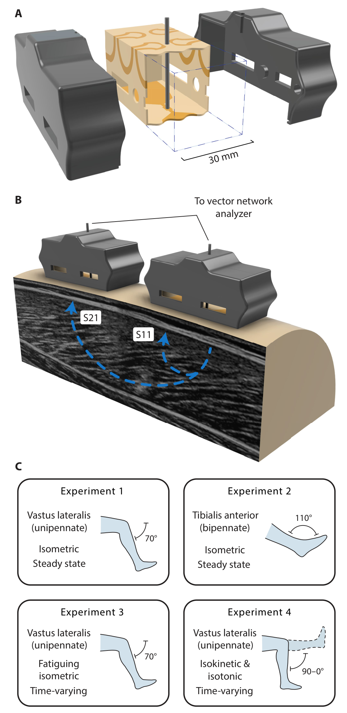
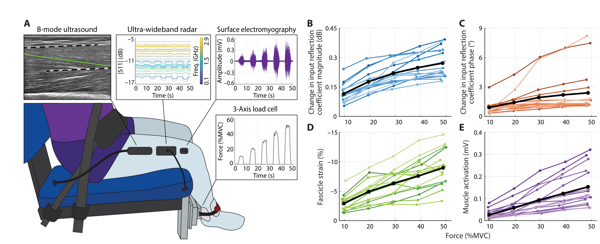
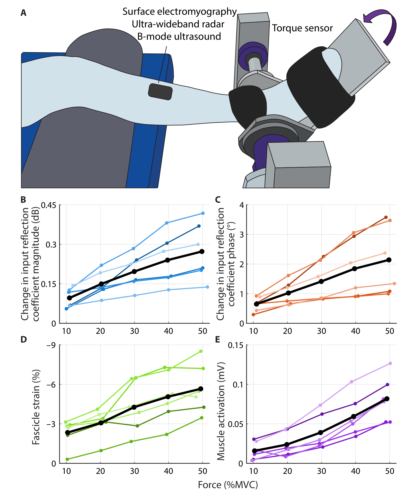
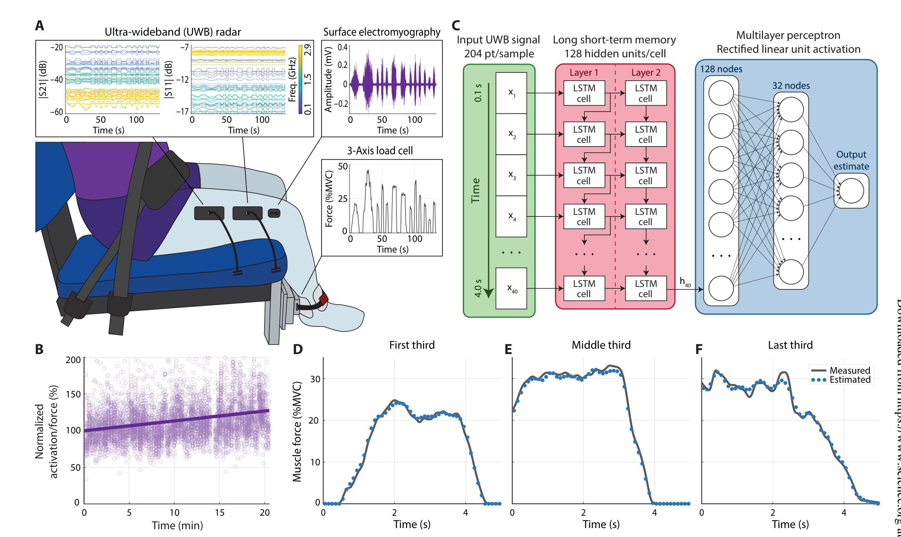
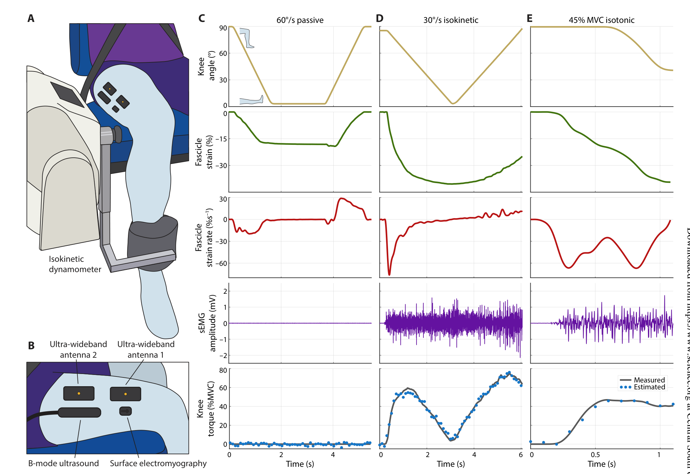
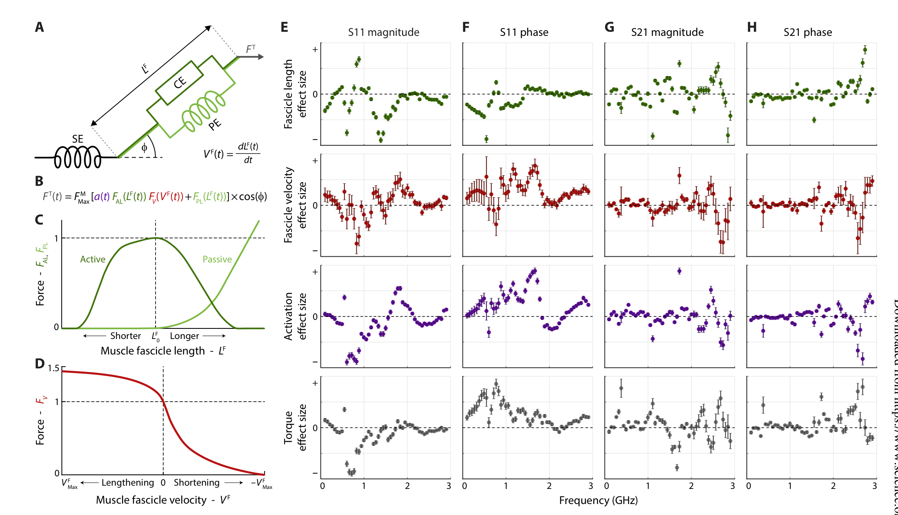

FIG. 1
测量原理与四步证据路线：反射 S11、透射 S21，再逐步增加任务难度
第一图不是性能结果，而是整篇论文的地图。先理解雷达到底读到什么，再看作者怎样从最受控的等长收缩走向疲劳与动态运动。

作者把一到两枚贴肤天线放在肌肉表面，用矢量网络分析仪扫描 100 MHz–2.9 GHz 的 51 个频点，读取反射与透射信号的幅值和相位。肌肉收缩改变组织的电磁特性，模型再用这些变化估计膝伸/踝背屈力矩。最好的同参与者内测试达到 R² = 0.988、NRMSE = 2.7%；真正的边界是：模型都要针对个人训练，动态实验的真值是关节力矩，不是单块肌肉的直接力。
证据边界：本页依据用户提供的 Science Robotics 正式论文、补充材料、MDAR 清单和 Data file S1。展示的是六张主图的高分辨率完整图体，不分发原始 PDF。论文题目使用“muscle forces”，但作者也明确说明：固定角度等长实验把归一化关节力矩近似为目标肌肉力；动态实验因力臂变化，只能报告膝关节力矩。所有预测模型都在同一参与者的数据内训练与测试，不能理解成跨人即插即用。
它证明了“多频电磁响应”可以成为一种肌肉状态指纹：单一频点可能同时受肌束长度、速度、激活和力矩影响，但把 51 个频点的 S11/S21 幅相联合起来，模型仍能在疲劳和动态运动中重建同一人的力矩波形。核心贡献不是发现一个只对肌力敏感的神奇频段，而是用实验条件解耦干扰因素，再让多频特征共同完成个体化估计。
第一图不是性能结果，而是整篇论文的地图。先理解雷达到底读到什么，再看作者怎样从最受控的等长收缩走向疲劳与动态运动。

16 名参与者在固定膝角下完成 10%–50% MVC。该图证明雷达信号与负载存在群体层面的单调关系，同时也显示不同人的斜率和基线差别很大。

这一图复制 Fig. 2 的逻辑，但目标肌肉换为双羽状的胫骨前肌。它支持方法不只适用于股外侧肌，却仍然是小样本、固定角度、低至中等强度的证据。

18 名参与者做 20 min、8%–45% MVC 的间歇膝伸。疲劳使同样力矩需要更高激活；模型则使用 S11/S21 幅相的完整多频时间窗来估计力矩。

6 名参与者完成 16 种条件。作者用被动运动改变肌束长度/速度而几乎不激活，用等速和等张任务制造不同的力—长度—速度—激活组合，再测试雷达能否重建力矩。

作者把 Hill 型肌肉模型中的激活、肌束长度和速度，加上膝力矩，一起放进多变量模型，分别解释 51 个频点上的 S11/S21 幅相。

给做硬件复现的人：本文的“雷达前端”实际是两枚体耦合天线加矢量网络分析仪，51 个等间隔频点约以 10.8 Hz 扫描；不是现成 UWB 定位芯片的距离输出。若要改成可穿戴系统，最关键的工程问题依次是频点裁剪、天线/皮肤耦合稳定、运动电缆伪影、重贴校准和跨会话泛化。
← 返回论文细读书架